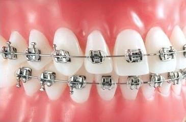
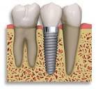
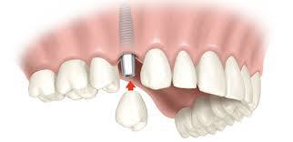

Visite nosso consultório
Dorner Odontologia
Av. Dr. João Batista Soares de Queiroz Júnior, 394
Jardim das Industrias, São José dos Campos, SP
12236495

Aparelho Ortodôntico, também conhecido como aparelho dentário é um dos tratamentos mais procurado no consultório odontológico, por proporcionar o alinhamento dos dentes deixando-os mais bonitos e estéticos, além de cuidar das articulações e músculos.

Existem dois tipos: os bracktes que são dispositivos colados aos dentes ou removível. Atualmente temos no mercado vários tipos de aparelhos fixos, dentre eles os estéticos que são mais discretos e proporcionam mais conforto ao paciente e os autoligados que é o que há de mais moderno, pois dispensam as famosas borrachinhas por possuírem uma tampinha que fecha o aparelho.
O aparelho ortodôntico convencional, de maneira geral, é composto pelos brackets, pelo fio e pelas famosas borrachinhas coloridas que ligam esse ao bracket para promover a movimentação dos dentes. No aparelho autoligado, os próprios brackets, possuem uma estrutura que fecha prendendo o arco à ela, como uma tampa, dispensando assim as borrachas. As borrachinhas fazem com que o fio fique preso ao arco muito fortemente causando atrito, com isto uma movimentação mais lenta, o aparelho autoligado não tem esse atrito intenso, ele tem uma movimentação mais rápida,
continua, dando mais conforto ao paciente e em muitos casos diminuindo o tempo de tratamento, atem de acumular menos placa bacteriana, facilitando a higienização.

Muitas pessoas tem o desejo de realizar o tratamento ortodôntico, porém não gostam do famoso “sorriso metálico” querem realizar o tratamento com mais descrição, sem perder a eficiência e qualidade do tratamento. Para esses paciente temos hoje os aparelhos estéticos, que são brackets da cor do dente, ou até mesmo transparentes dependendo do material, os mais comuns são de cerâmica.
Clareamento dental pode ser uma maneira muito eficaz de clarear a cor natural de seus dentes sem remover qualquer da superfície do dente. Não se pode fazer uma mudança completa da cor, mas sempre é possível melhorar.
Há uma série de razões pelas quais você pode ter seus dentes clareados. Todo mundo é diferente; e assim como o nosso cabelo e cor da pele variam, assim também são nossos dentes.
Os dentes podem também ser escurecidos por alimentos e bebidas, tais como café, chá, vinho tinto. Fumar também pode manchar os dentes.
'Cálculo' ou tártaro também pode afetar a cor dos seus dentes. Algumas pessoas podem ter coloração sob a superfície, o que pode ser causado por certos antibióticos ou por pequenas fissuras nos dentes que ocupam manchas.
O claremento à laser é o método mais usual de clareamento dental. O dentista irá avaliar seu caso e dizer qual o melhor método. Primeiro o dentista vai colocar um protetor de borracha ou um gel em suas gengivas para protegê-los. Ele, então, irá aplicar o produto clareador nos dentes, deixando agir de acordo com o método escolhido. Em seguida, uma luz ou laser é sobre os dentes para ativar a substância. A luz acelera a reação do produto de clareamento e a alteração de cor pode ser alcançado mais rapidamente.
O total do tratamento pode ser feito normalmente dentro de três sessões dependendo de cada caso, geralmente de uma hora.
Os efeitos do clareamento são pensados para durar até três anos. No entanto, isto pode variar de pessoa para pessoa. O efeito é menos provável de durar tanto tempo, se você fuma, ou come ou bebe produtos que podem manchar os dentes. Pergunte ao seu time dental para a sua opinião antes de iniciar o tratamento.
Algumas pessoas podem achar que seus dentes se tornam sensíveis ao frio durante ou após o tratamento. Outros podem sentir desconforto nas gengivas, dor de garganta ou manchas brancas na linha da gengiva. Estes sintomas são geralmente temporários e devem desaparecer dentro de poucos dias do término do tratamento.


Um implante dentário (também conhecido como um implante ou fixação endóssea) é um componente cirúrgico que faz interface com o osso do maxilar ou mandibular para suportar uma prótese dentária, tais como uma coroa, ponte, dentadura, ou para atuar como uma âncora ortodôntico. A base para implantes dentários modernos é um processo biológico chamado osseointegração em que os materiais, tais como o titânio, formam uma ligação íntima ao osso. O suporte de implante é colocado em primeiro lugar, um tempo de cicatrização é necessário para a osseointegração antes da prótese dental (um dente, ponte ou dentadura).
 
A Dra. Andressa Rodrigues Dorner CROSP 108.796 é formada pela UNESP de São José dos Campos, Pós-graduanda em Ortodontia no Instituto Paulista de Pesquisas Odontológicas. Pós Graduanda e Prótese Parcial removível pela Unesp- São José dos Campos.
Dorner Odontologia
Av. Dr. João Batista Soares de Queiroz Júnior, 394
Jardim das Industrias, São José dos Campos, SP
12236495
dra.andressadorner@gmail.com
Telefone: (12) 3018-6939
Quarta - Sexta: 9am às 18pm
Sábado: 9am às 12pm